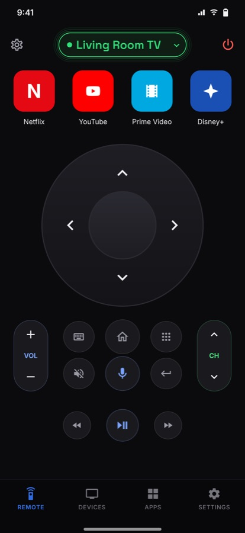

Use your phone as a TV remote
A free remote app for iPhone and Android. It controls Samsung, LG, Roku, Hisense, Android TV and Google TV over your Wi-Fi, with no infrared and nothing to point.
★★★★★ Rated 4.6 on the App Store and 5.0 on Google Play
Free. Your phone and TV need to be on the same Wi-Fi.



Works with these TVs
Android TV and Google TV include most Sony, TCL, Philips, Xiaomi, Hisense and Sharp TVs, NVIDIA SHIELD and Chromecast with Google TV. Chromecast without Google TV gets volume, mute and playback only.
What you can do
- A large D-pad with an OK key you can press without looking
- Volume, mute, channels, back, home and power
- Play, pause, rewind and fast forward
- Type with your phone's keyboard instead of the TV's on-screen one
- Voice search: say it instead of typing it
- One-tap shortcuts to Netflix, YouTube, Prime Video and Disney+
- Turn many TVs on from standby
Set up in a minute
- Connect your phone to the same Wi-Fi as your TV.
- Open the app. It finds the TVs on your network by itself.
- Tap your TV and accept the one-time prompt, if your TV shows one.
Questions
Why can't the app find my TV?
Your phone and TV must be on the same Wi-Fi network, not a guest network or mobile data. The TV must be switched on and connected to Wi-Fi. On iPhone, also open Settings, find the app and turn on Local Network: without it, iPhone blocks the app from seeing anything on your network.
Is it free?
Yes. Every feature is free and the app is supported by ads. On iPhone you can remove ads with a subscription or a one-time purchase.
Does it use infrared?
No. It works over Wi-Fi, so you don't need to point your phone at the TV, and it works from another room.
Which TVs are not supported?
Fire TV and Vizio TVs are found but cannot be controlled yet. Very old smart TVs (around 2014 and earlier) may not answer at all.
Is my data sent anywhere?
No. Commands go straight from your phone to your TV over your own network. There is no account and no server in between.
At a glance
- What it is: a free app that turns your phone into a Wi-Fi remote for your TV.
- iPhone and iPad: "TV Remote for Google & Android" on the App Store.
- Android phones: "Remote for LG TV & More" on Google Play. Same app, same features.
- TVs: Samsung (Tizen, 2016+), LG (webOS), Roku, Hisense and Toshiba VIDAA, and Android TV / Google TV (Sony, TCL, Philips, Xiaomi, NVIDIA SHIELD, Chromecast with Google TV).
- Not supported yet: Fire TV, Vizio, and older LG NetCast TVs.
- Needs: phone and TV on the same Wi-Fi. No account, no infrared, no extra hardware.
- Cost: free with ads; on iPhone, ads can be removed with a purchase.
Last updated 2026-11-23.